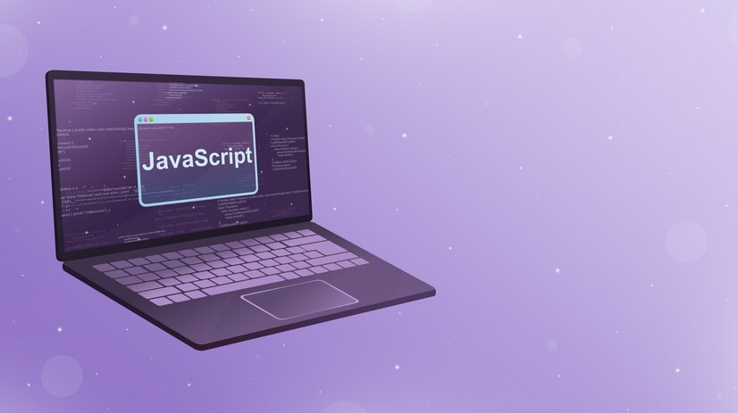

JavaScript
JavaScript
JavaScript
JavaScript
JavaScriptJavaScript (/ˈdʒɑːvɑːˌskrɪpt/; аббр. JS /ˈdʒeɪ.ɛs./) — мультипарадигменный язык программирования. Поддерживает объектно-ориентированный, императивный и функциональный стили. Является реализацией спецификации ECMAScript (стандарт ECMA-262[9]).
JavaScript обычно используется как встраиваемый язык для программного доступа к объектам приложений. Наиболее широкое применение находит в браузерах как язык сценариев для придания интерактивности веб-страницам[10]. Основные архитектурные черты: динамическая типизация, слабая типизация, автоматическое управление памятью, прототипное программирование, функции как объекты первого класса.
На JavaScript оказали влияние многие языки, при разработке была цель сделать язык похожим на Java. Языком JavaScript не владеет какая-либо компания или организация, что отличает его от ряда языков программирования, используемых в веб-разработке[~ 1][11].
Название «JavaScript» является зарегистрированным товарным знаком корпорации Oracle в США[12]. В 1992 году компания Nombas (впоследствии приобретённая Openwave[en]) начала разработку встраиваемого скриптового языка Cmm (Си-минус-минус), который, по замыслу разработчиков, должен был стать достаточно мощным, чтобы заменить макросы, сохраняя при этом схожесть с Си, чтобы разработчикам не составляло труда изучить его[13]. Главным отличием от Си была работа с памятью. В новом языке всё управление памятью осуществлялось автоматически: не было необходимости создавать буфера, объявлять переменные, осуществлять преобразование типов. В остальном языки сильно походили друг на друга: в частности, Cmm поддерживал стандартные функции и операторы Си[14]. Cmm был переименован в ScriptEase, поскольку исходное название звучало слишком негативно, а упоминание в нём Си «отпугивало» людей[13][15]. На основе этого языка был создан проприетарный продукт CEnvi. В конце ноября 1995 года Nombas разработала версию CEnvi, внедряемую в веб-страницы. Страницы, которые можно было изменять с помощью скриптового языка, получили название Espresso Pages — они демонстрировали использование скриптового языка для создания игры, проверки пользовательского ввода в формы и создания анимации. Espresso Pages позиционировались как демоверсия, призванная помочь представить, что случится, если в браузер будет внедрён язык Cmm. Работали они только в 16-битовом Netscape Navigator под управлением Windows[16].
Самая первая реализация JavaScript была создана Бренданом Эйхом (англ. Brendan Eich) в компании Netscape, и с тех пор обновляется, чтобы соответствовать ECMA-262 Edition 5 и более поздним версиям. Этот движок называется SpiderMonkey и реализован на языке C/C++. Движок Rhino создан Норрисом Бойдом (англ. Norris Boyd) и реализован на языке Java. Как и SpiderMonkey, Rhino соответствует ECMA-262 Edition 5.
Перед Бренданом Эйхом, нанятым в компанию Netscape 4 апреля 1995 года[18], была поставлена задача внедрить язык программирования Scheme или что-то похожее в браузер Netscape. Поскольку требования были размыты, Эйха перевели в группу, ответственную за серверные продукты, где он проработал месяц, занимаясь улучшением протокола HTTP[18]. В мае разработчик был переброшен обратно, в команду, занимающуюся клиентской частью (браузером), где он немедленно начал разрабатывать концепцию нового языка программирования. Менеджмент разработки браузера, включая Тома Пакина (англ. Tom Paquin), Михаэля Тоя[en], Рика Шелла (англ. Rick Schell), был убеждён, что Netscape должен поддерживать язык программирования, встраиваемый в HTML-код страницы[19]. Марк Андрессен Билл Джой
Помимо Брендана Эйха, в разработке участвовали[18] сооснователь[20] Netscape Communications Марк Андрессен и сооснователь Sun Microsystems Билл Джой: чтобы успеть закончить работы над языком к релизу браузера, компании заключили соглашение о сотрудничестве в разработке[21]. Они ставили перед собой цель обеспечить «язык для склеивания» составляющих частей веб-ресурса: изображений, плагинов, Java-апплетов, который был бы удобен для веб-дизайнеров и программистов, не обладающих высокой квалификацией[18]. Первоначально по предложению Марка Андрессена[22] язык был назван Mocha[23][24][25], был реализован Бренданом Эйхом в течение десяти дней и впервые был включен в пре-альфу версию Netscape 2[22]. Затем он был переименован в LiveScript[25][26] и предназначался как для программирования на стороне клиента, так и для программирования на стороне сервера (там он должен был называться LiveWire)[21]. На синтаксис оказали влияние языки Си и Java, и, поскольку Java в то время было модным словом[18][21], 4 декабря 1995 года LiveScript переименовали в JavaScript[27], получив соответствующую лицензию у Sun. Анонс JavaScript со стороны представителей Netscape и Sun состоялся накануне выпуска второй бета-версии Netscape Navigator[18]. В нём декларируется, что 28 лидирующих ИТ-компаний выразили намерение использовать в своих будущих продуктах JavaScript как объектный скриптовый язык с открытым стандартом[28].
В 1996 году компания Microsoft выпустила аналог языка JavaScript, названный JScript. Анонсирован этот язык был 18 июля 1996 года[29]. Первым браузером, поддерживающим эту реализацию, был Internet Explorer 3.0.
По инициативе компании Netscape[30][31] была проведена стандартизация языка ассоциацией ECMA. Стандартизированная версия имеет название ECMAScript, описывается стандартом ECMA-262. Первой версии спецификации соответствовал JavaScript версии 1.1, а также языки JScript и ScriptEasy[13][21].
Популярность В статье «The World’s Most Misunderstood Programming Language Has Become the World’s Most Popular Programming Language»[32] (с англ. — «Самый неправильно понятый язык программирования в мире стал самым популярным в мире языком программирования») Дуглас Крокфорд утверждает, что лидирующую позицию JavaScript занял в связи с развитием AJAX, поскольку браузер стал превалирующей системой доставки приложений. Он также констатирует растущую популярность JavaScript, то, что этот язык встраивается в приложения, отмечает значимость языка. Согласно TIOBE Index, базирующемуся на данных поисковых систем Google, MSN, Yahoo!, Википедия и YouTube, в апреле 2015 года JavaScript находился на 6-м месте (год назад — на 9-м)[33]. По данным Black Duck Software[en][34], в разработке открытого программного обеспечения доля использования JavaScript росла. 36 % проектов, выпуски которых состоялись с августа 2008 по август 2009 года, включают JavaScript, наиболее часто используемый язык программирования с быстрорастущей популярностью. 80 % открытого программного обеспечения использует Си, C++, Java, Shell и JavaScript. При этом JavaScript — единственный из этих языков, чья доля использования увеличилась (более чем на 2 процента, если считать в строках кода)[35]. JavaScript является самым популярным языком программирования, используемым для разработки веб-приложений на стороне клиента[en][36][37].Синтаксис языка JavaScript во многом напоминает синтаксис Си и Java, семантически же язык гораздо ближе к Self, Smalltalk или даже Лиспу[32][42][Спецификация 2].
В JavaScript:
все идентификаторы регистрозависимы, в названиях переменных можно использовать буквы, подчёркивание, символ доллара, арабские цифры, названия переменных не могут начинаться с цифры, для оформления однострочных комментариев используются //, многострочные и внутристрочные комментарии начинаются с /* и заканчиваются */.
<body>
<script type= "application/javascript"src= "http://Путь_к_файлу_со_скриптом">
</script>
</body>
| 1 | 2 | 3 |
| 1 | 2 | 3 |